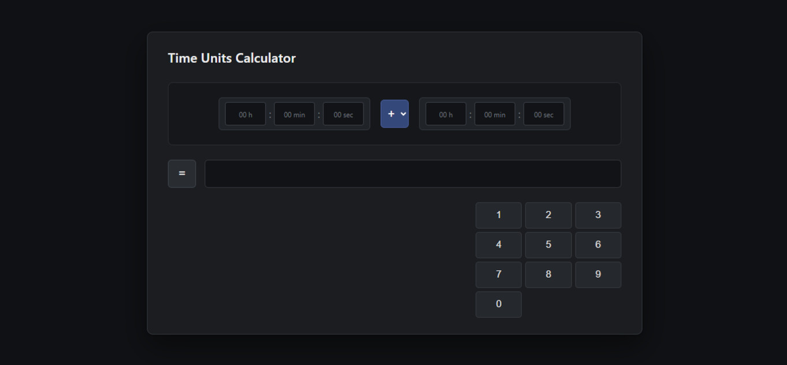
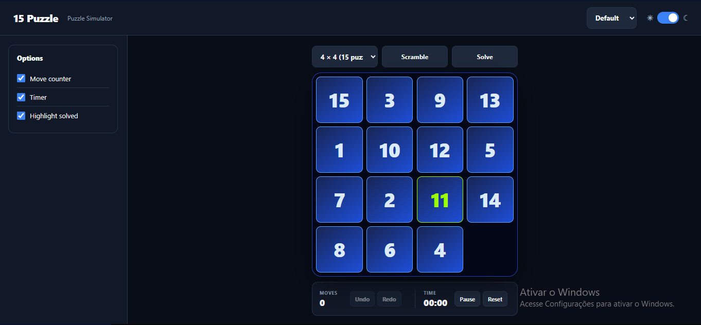

Pro Timer

Pro Timer is a speedcubing timer designed to make competition-style practice possible without requiring extensive setup or manual management.
The Main Idea
The main design idea came from an accidental implementation. While developing the timer, I initially implemented averages of 5 incorrectly, calculating them in fixed blocks instead of using the usual rolling average of the last five resolutions.
I realized that this behavior could actually create an interesting competition-like experience, and it became the foundation of Pro Timer's average system.
Features
- Sessions and solve management
- Detailed solve and average statistics
- Scrambles and subsets
- Non-rolling block-based averages
- Blindfolded solving functionality
- Fewest Moves Challenge functionality
- TPS calculators
- Daily and all-time statistics
Development
One of the biggest challenges was state management. With sessions, resolutions, statistics, settings, event-specific behavior, and other interconnected features, keeping the application's state consistent became one of the most difficult parts of the project.
Current Status
Pro Timer is my most developed and polished project so far. It is fully usable and most of its intended functionality is implemented, although the project is not completely finished.
GitHub: Pro Timer on GitHub
App: Open Pro Timer
Cubisz

Cubisz is a solve review app for the Rubik's Cube. You paste a scramble and your solution, and it replays the solve on a 3D cube, compares each step with what an engine would do from the same position, and suggests a fingertrick for every move.
The Idea
The original goal was to create a reliable way to display scrambles for Pro Timer. During development, the project grew into something more general: a digital Rubik's Cube that can be represented, manipulated, and analyzed by other applications.
Pro Timer still uses that first version of Cubisz for scramble visualization, move-count and solution checking, TPS calculation, and FMC functionality.
I then rebuilt Cubisz as a solve review app on top of Puzzly, a cube engine I built, which does the solving, the scrambles, and the fingertrick suggestions.
Current Features
- 3D cube or flat net that plays your solution, split into the method's steps as you type
- Step-by-step review against the engine's choice from the same cube
- A suggested fingertrick for every move
- Comparing, racing, or branching off the engine's own solve
- Step solver from any point of your solution
- 2×2 viewer
Development
One of the hardest parts was getting the sticker swapping caused by cube movements correct while preserving the actual state of the cube.
Rebuilding it as a review app meant connecting it to Puzzly. The heavy solving now runs on a server, so the page doesn't have to build large tables in the browser.
Current Status
Cubisz works as a solve review app for the 3×3, with a 2×2 viewer. Its solving runs on Puzzly's server, and falls back to the browser when the server can't answer.
GitHub: Cubisz on GitHub
App: Open Cubisz
Easy Score

Easy Score is a sheet music editor designed around a simple idea: creating music notation should not require learning a complicated music application first.
The Idea
I wanted to write sheet music, but found existing music notation applications difficult to learn. I wanted to create something where basic musical knowledge and an intuitive interface would be enough to start turning ideas into sheet music.
Instead of relying heavily on conventions from existing notation software, I looked at applications such as word processors, video editors, and image editors for interaction ideas that users already understand.
Current Features
- Stave management
- Creating and managing bars
- Clef, time signature, and key signature management
- Text-based note input
- Saving and managing application state
- Playing generated scores
- Mouse-based note input in development
Development
Easy Score is my most complex project so far. Managing application initialization and restoring its state has been one of the biggest technical challenges.
Mouse-based note input is another ongoing challenge, since the user's position and interaction need to be translated into the correct musical notation.
Current Status
Easy Score currently supports basic sheet music writing using text-based note input. Users can create the staves they need, write music on them, and play back the resulting score.
The project is still under development. Not all sheet music symbols are supported yet, and mouse-based note input is still being developed.
GitHub: Easy Score on GitHub
App: Open Easy Score
Mixed Units Calculator

Mixed Units Calculator is designed to make calculations involving multiple units more intuitive.
The Idea
The idea came from a situation at a Rubik's Cube competition. There was a cumulative time limit of ten minutes, and I needed to subtract completed solve times from that limit while working with minutes, seconds, and milliseconds together.
This made me realize that mixed-unit calculations can be unnecessarily difficult when a calculator expects everything to be converted into one unit first.
The Concept
The goal is to let users enter and receive values in the units that make sense to them while the application handles the conversions internally.
Current Features
- Mixed-unit input and output, like 1 h 30 min + 45 min = 2 h 15 min
- 25 kinds of quantity and about 240 units: time, length, mass, area, volume, speed, temperature, money, data, and more
- Every answer also shown in the other units of its kind
- Scientific functions: powers, roots, logarithms, trigonometry, factorials, and constants
- Exact answers, worked out as fractions
- Daily exchange rates for 31 currencies, plus bitcoin and ether
Current Status
The project started as a proof of concept for hours, minutes, and seconds, and was later rewritten into a full mixed-units calculator. It works offline, except for downloading exchange rates.
GitHub: Mixed Units Calculator on GitHub

15-Puzzle Simulator
The 15-Puzzle Simulator is a modern sliding-puzzle simulator designed to make larger puzzles enjoyable to practice and explore.
The Idea
I received a 15-puzzle as a competition participation gift. After trying it, I became interested in solving it and even developed my own method for it.
I wanted to try larger sliding puzzles, so I looked for simulators online. The available options did not provide the combination of visual design, modern layout, scrambling, and overall functionality that I wanted.
Current Features
- Sliding-puzzle simulation from 3×3 to 10×10
- Customizable visual themes
- Modern interface and layout
- Puzzle scrambling
- Move counter
- Timer
- Customization options
Development
One of the main technical challenges was moving and swapping puzzle pieces without breaking the DOM structure.
The project also required careful layout management so that different puzzle sizes could remain usable within the interface.
What I Focused On
The parts I am most proud of are the styling and scrambling system. I wanted the simulator to feel like a modern application rather than simply displaying a puzzle grid on a page.
Current Status
The simulator is close to being finished and is intended to become my first publicly available application outside of projects hosted through GitHub Pages.
In the future, I want to integrate Cubisz and expand the project into a more complete puzzle simulator.
GitHub: 15-Puzzle Simulator on GitHub